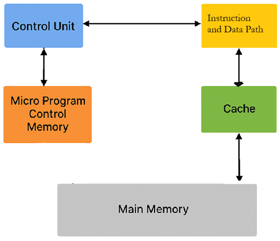

Parametry procesora
Rdzenie i wątki
Współczesne procesory posiadają wiele rdzeni fizycznych (np. 6, 8, 12, 16), co pozwala na równoległe wykonywanie wielu zadań jednocześnie bez zacięć systemu.
Taktowanie (GHz) i pamięć Cache
Częstotliwość taktowania określa liczbę wykonywanych cykli na sekundę, natomiast bardzo szybka pamięć podręczna (Cache L1/L2/L3) przechowuje najczęściej używane instrukcje.
